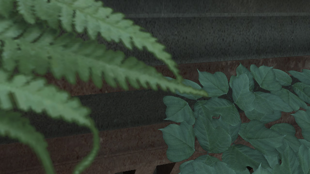
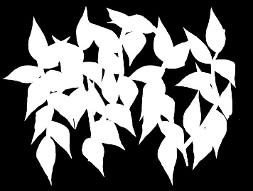

UDN
Search public documentation:
SoftMaskedKR
English Translation
日本語訳
中国翻译
Interested in the Unreal Engine?
Visit the Unreal Technology site.
Looking for jobs and company info?
Check out the Epic games site.
Questions about support via UDN?
Contact the UDN Staff
日本語訳
中国翻译
Interested in the Unreal Engine?
Visit the Unreal Technology site.
Looking for jobs and company info?
Check out the Epic games site.
Questions about support via UDN?
Contact the UDN Staff
SoftMasked 블렌드 모드
문서 변경내역: Martin Mittring 작성 및 업데이트. 홍성진 번역.
개요
 여린 풀 및 나뭇잎 텍스처가 경계를 이루는 부분의 안티-앨리어싱이 어때 보이는지 주목해 봅시다. 부가적으로 더 멀리 있는 풀들이 뎁스 버퍼에 영향을 덜 끼치게 되고, 그에 따라 SSAO 부작용도 줄어들기에 앰비언트 오클루전(배경 가려짐) 효과도 훨씬 나아 보이게 됩니다.
아래는 같은 콘텐츠를 고전적인 Masked 머티리얼 블렌드 모드로 봤을 때입니다:
여린 풀 및 나뭇잎 텍스처가 경계를 이루는 부분의 안티-앨리어싱이 어때 보이는지 주목해 봅시다. 부가적으로 더 멀리 있는 풀들이 뎁스 버퍼에 영향을 덜 끼치게 되고, 그에 따라 SSAO 부작용도 줄어들기에 앰비언트 오클루전(배경 가려짐) 효과도 훨씬 나아 보이게 됩니다.
아래는 같은 콘텐츠를 고전적인 Masked 머티리얼 블렌드 모드로 봤을 때입니다:
활성화 및 미세조절법
 활성화 방법은 그냥 머티리얼 에디터에서 Blend Mode 를 Blend_SoftMasked 로 설정하기만 하면 됩니다. 최적의 결과를 내기 위해서는 Opacity Mask Clip Value 값을 0.7 (, 유효 범위는 0.4에서 0.9) 정도로 변경해 줘야 합니다. 값이 커질수록 부드러운 전이가 늘어나게 되지만, (포그나 뎁스 오브 필드에 대해 올바른 픽셀 깊이를 갖는) 고전 Masked 방식의 렌더링 양도 줄어들게 됩니다.
활성화 방법은 그냥 머티리얼 에디터에서 Blend Mode 를 Blend_SoftMasked 로 설정하기만 하면 됩니다. 최적의 결과를 내기 위해서는 Opacity Mask Clip Value 값을 0.7 (, 유효 범위는 0.4에서 0.9) 정도로 변경해 줘야 합니다. 값이 커질수록 부드러운 전이가 늘어나게 되지만, (포그나 뎁스 오브 필드에 대해 올바른 픽셀 깊이를 갖는) 고전 Masked 방식의 렌더링 양도 줄어들게 됩니다.
좋은 콘텐츠

왼쪽의 나뭇잎 텍스처는 확대되었고, 오른쪽은 그렇지 않습니다. 여기서 적절한 검정 및 하양 마스크로 밉 매핑하면 경계의 안티-앨리어싱이 잘 나오게 됩니다. (이 그림에는 별 문제가 없어 보입니다.) 텍스처 콘텐츠가 회색조 콘텐츠로 된 부분이 큰 경우라면 확대 없이도 경계가 클 수 있습니다. 이런 현상도 쉽게 피할 수 있습니다. 마스크된 콘텐츠는 어쨌든 바이너리 마스크로 나오게 되니, (마스크된 것에 비해) 결과에 크게 영향을 끼치지 않고서 크게 전이된 부분을 없애도록 콘텐츠를 변경할 수 있습니다. 이런 변경 작업은 포토샵으로 할 수 있겠습니다. 나쁜 텍스처 마스크의 예로 다음의 예를 사용하겠습니다: Masked 의 경우 임계값보다 밝은 것들은 전부 불투명이 될 테니, 이 텍스처는 괜찮을 것입니다. SoftMasked 의 경우 회색 부분에 부분적 빛샘이 생겨 소트나 포그 문제가 있을 수 있습니다. 콘텐츠의 배경이 검정도 아니라, 모든 트라이앵글이 가려지지 말아야 할 곳에도 가려지게 됩니다. 좋은 마스크란 (회색 부분은 최소화시키면서 결과를 최대한 좋게 낸) 이 정도는 되야겠죠:
Masked 의 경우 임계값보다 밝은 것들은 전부 불투명이 될 테니, 이 텍스처는 괜찮을 것입니다. SoftMasked 의 경우 회색 부분에 부분적 빛샘이 생겨 소트나 포그 문제가 있을 수 있습니다. 콘텐츠의 배경이 검정도 아니라, 모든 트라이앵글이 가려지지 말아야 할 곳에도 가려지게 됩니다. 좋은 마스크란 (회색 부분은 최소화시키면서 결과를 최대한 좋게 낸) 이 정도는 되야겠죠:

텍스처를 빠르게 수리하기 위해서는, 포토샵에서 간단한 작업 몇 단계면 됩니다:- 마스크가 보이는지 확인 (RGB 또는 알파 채널)
- Image Size 를 (가로 세로) 400% 로 변경. Resample image 설정이 bilinear 인지 확인
- 옵션으로 이미지를 약간 뿌옇게 (예로 Gaussian blur 2.5 픽셀)
- Adjustments Threshold 적용, 콘텐츠에 따라 미세조절 (Masked 에서는 Opacity Clip Mask 값으로 조절)
- Image Size 를 (가로 세로) 25% 로 변경. Resample image 설정이 bilinear 인지 확인

퍼포먼스
GPU
아주 약간의 추가 픽셀 셰이더 인스트럭션이 필요합니다. 지오메트리는 두 번 렌더링해야 합니다. (EarlyZ 및 Base 패스, 섀도우맵 가능.) 프레임 버퍼와의 블렌딩 연산은 Xbox360에서는 무시할 만 하지만, 짧은 셰이더를 사용하는 기타 하드웨어에서는 눈에 띌 수도 있습니다. 베이스 패스에 대해서는 오브젝트를 뒤에서부터 앞의 순서로 렌더해야 합니다.CPU
필수적인 소트때문에 (소트 함수, 스테이트 추가 변경 등) CPU 렌더링 비용이 추가됩니다. 이는 뷰에 따라 다르지만, 각기 다른 다중 머티리얼을 인터리브 방식으로 렌더링해야 하는 경우에는 더욱 심해집니다.제한사항
- 현재는 잠재력과 Xbox360에서 사용 가능 여부를 평가하기 위한 초기 구현 단계입니다. 앞으로의 개선을 통해 제한사항 일부를 해결할 수야 있겠지만, 추가되는 비용으로 인해 퍼포먼스가 현저히 떨어질 수 있습니다. PC 용 Xbox360 식 미리보기가 괜찮겠으며, 다음 개선 사항 중 하나가 될 수도 있습니다.
- 현재 구현은 Xbox360에서만 제대로 작동하며, 앰비언트 라이팅(환경광) 및 단일 도미넌트 라이트(우세광, 태양) 용입니다.
- PC에서는 현재 배경 라이팅 용으로만 작동합니다. 도미넌트 라이트에 영향받은 SoftMasked 테두리를 겹치면 너무 밝아 보입니다. 풀에서는 매우 눈에 띄며, 오브젝트가 가려질수록 점차 줄어듭니다.
- 현재 플레이스테이션 3 및 셰이더 모델 4 용으로는 지원되지 않는 걸로 간주됩니다.
- SoftMasked 렌더링은 앰비언트와 디렉셔널 라이트 하나 이상의 라이트는 지원하지 않습니다.
(모든 SoftMasked 오브젝트가 단일 패스에 렌더링되지 않으면 PC에서 볼 수 있듯이 테두리가 너무 밝아 보이게 됩니다.) - 그림자는 XBox360에서, 그리고 단일 도미넌트 라이트에서만 지원됩니다.
- 포그
SoftMasked 는 최대 투명도 구역에서만 뎁스 버퍼에 영향을 끼칩니다. 포그 렌더링은 뎁스 버퍼를 기반으로 하기에 몇몇 픽셀은 너무 짙어 보일 수 있습니다. Opacity Mask Clip 값을 줄이면 도움이 좀 되겠으나, 그래 버리면 결과가 좀 거칠어 집니다. 다음 이미지에서 이 문제를 확인할 수 있습니다. (앞은 SoftMasked, 뒤는 Masked.)